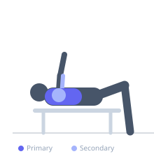

Exercise guide / Decline Machine Chest Press
Decline Machine Chest Press
The Decline Machine Chest Press performs a chest press movement at a downward angle, targeting the sternal and lower fibers of the pectoralis major. The machine provides a guided bar path, and the decline angle increases the mechanical emphasis on the lower chest region compared to flat or incline pressing variations.
Primary muscles
pectoralis major sternal
Secondary muscles
pectoralis major clavicular
deltoid anterior
triceps lateral head
triceps medial head
Stabilizers
pectoralis minor
Equipment
Chest Press Machine


Starting position
- Sit in the decline machine with the seat adjusted so handles are at lower chest level. Secure feet if the machine provides ankle support.
Setup
- Adjust the seat height and handle depth. The machine should guide the press in a downward-angled path relative to the user's torso.
Steps
- Step 1: Grip the handles at lower chest level.
- Step 2: Press forward and downward along the machine's guided path to full extension.
- Step 3: Return under control to the starting position.
- Step 4: Repeat for the prescribed reps.
Coaching cues
- Press downward and outward to feel the lower chest working
- Keep the shoulder blades retracted
Breathing
- Exhale on the press. Inhale on the return.
Range of motion
- Full extension at the front; full return to deep stretch without discomfort.
Tempo
- 3-1-2-0
Common mistakes
- Seat height set incorrectly so the press does not target the lower chest
- Rushing the eccentric phase
Safety
- Secure feet in the ankle holds if provided — especially important at a decline angle
- Adjust weight incrementally — machine weight stacks feel different from free weights at decline angles
Training
- hypertrophy: 10–15 reps
- endurance: 15–25 reps
- hypertrophy: 3–4 sets
- endurance: 2–3 sets
- Rest: {'hypertrophy': 75, 'endurance': 45}